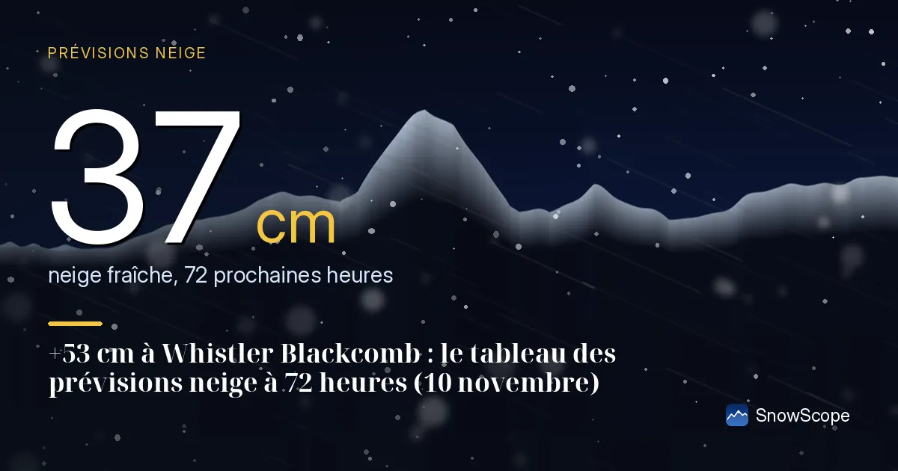
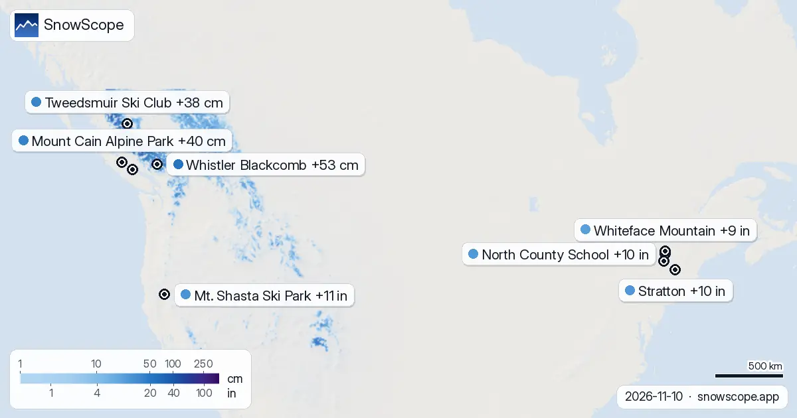

+53 cm à Whistler Blackcomb : le tableau des prévisions neige à 72 heures (10 novembre)
Whistler Blackcomb domine les perspectives de neige sur trois jours avec 53 cm prévus d'ici le 13 novembre. SnowScope suit les meilleurs spots à neige de l'hémisphère nord pour vous montrer où aller, à quelle altitude skier et quand la neige commence à devenir humide.
Consultez les prévisions neige en temps réel pour Whistler Blackcomb sur l'application SnowScopeHauteurs de neige, alertes poudreuse et carte 3D, gratuitement.
Pyrénées et Alpes françaises en tête en Europe
Piau-Engaly dans les Pyrénées est en haut de la liste européenne. Il accumuleraita 6 cm dans les prochaines 24 heures et atteindra 37 cm d'ici le 13 novembre, avec la limite de neige près de 2 600 m. Cela signifie que la neige fraîche tombera en poudre au-dessus de cette altitude.
Les Alpes françaises suivent de près. La Grave attend 2 cm cette nuit et 36 cm au total, avec une neige légère au-dessus de 2 900 m. Les Deux Alpes et Alpe d'Huez Grand Domaine verront des totaux similaires—autour de 35 et 29 cm—sur la même période, avec leurs limites de neige plus basses à 2 800 m, donc les pistes de moyenne montagne devraient en profiter aussi.
| # | Station | Région | +24 h | +72 h | Limite pluie-neige |
|---|---|---|---|---|---|
| 1 | Piau-Engaly | Pyrénées · France | 6 cm | 37 cm | 2 600 m |
| 2 | La Grave | Alpes · France | 2 cm | 36 cm | 2 900 m |
| 3 | Les Deux Alpes | Alpes · France | 2 cm | 35 cm | 2 800 m |
| 4 | Platak | Alpes · Croatia | 0 cm | 31 cm | 3 000 m |
| 5 | Orcières Merlette | Alpes · France | 1 cm | 30 cm | 2 800 m |
| 6 | Alpe d'Huez Grand Domaine | Alpes · France | 2 cm | 29 cm | 2 800 m |
| 7 | Les Orres | Alpes · France | 1 cm | 29 cm | 2 700 m |
| 8 | skijalište Vučići | Alpes · Croatia | 0 cm | 28 cm | 3 000 m |
| # | Station | Région | +24 h | +72 h | Limite pluie-neige |
|---|---|---|---|---|---|
| 1 | Mt. Shasta Ski Park | Ouest américain · États-Unis | 0 in (0 cm) | 11 in (27 cm) | 12 100 ft (3 700 m) |
| 2 | North County School | Nord-Est américain · États-Unis | 0 in (1 cm) | 10 in (25 cm) | – |
| 3 | Stratton | Nord-Est américain · États-Unis | 0 in (0 cm) | 10 in (25 cm) | 4 900 ft (1 500 m) |
| 4 | Whiteface Mountain | Nord-Est américain · États-Unis | 0 in (1 cm) | 9 in (24 cm) | 3 300 ft (1 000 m) |
| 5 | Gore Mountain | Nord-Est américain · États-Unis | 0 in (0 cm) | 9 in (23 cm) | 3 300 ft (1 000 m) |
| 6 | Killington Resort | Nord-Est américain · États-Unis | 0 in (0 cm) | 8 in (21 cm) | 3 600 ft (1 100 m) |
| 7 | Mount Snow | Nord-Est américain · États-Unis | 0 in (0 cm) | 8 in (21 cm) | 4 900 ft (1 500 m) |
| 8 | Magic Mountain | Nord-Est américain · États-Unis | 0 in (0 cm) | 8 in (20 cm) | 3 600 ft (1 100 m) |
| # | Station | Région | +24 h | +72 h | Limite pluie-neige |
|---|---|---|---|---|---|
| 1 | Whistler Blackcomb | Ouest canadien · Canada | 18 cm | 53 cm | 2 400 m |
| 2 | Mount Cain Alpine Park | Ouest canadien · Canada | 0 cm | 40 cm | 2 600 m |
| 3 | Tweedsmuir Ski Club | Ouest canadien · Canada | 23 cm | 38 cm | 1 600 m |
| 4 | Mount Washington Alpine Resort | Ouest canadien · Canada | 0 cm | 4 cm | 2 700 m |

Croatie et Alpes du sud en récolte de neige fraîche
Platak en Croatie ne s'attend à aucune neige nouvelle dans les prochaines 24 heures mais accumulera 31 cm d'ici mercredi, bien que la limite de neige soit haute à 3 000 m. Cela concentre la neige utile sur les pistes supérieures. Orcières Merlette, situé à 2 731 m, verra 1 cm cette nuit et 30 cm en 72 heures, juste en dessous de sa limite de neige de 2 800 m.
Les Orres offre une option à moyenne altitude avec 29 cm prévus et une limite de neige près de 2 700 m. Si vous voulez skier plus bas sans trouver de pluie, les Alpes du sud sont votre cible.

Nord-Est américain : neige modérée sur toute la région
Le Nord-Est verra des chutes de neige plus régulières mais moins spectaculaires. North County School et Stratton s'attendent chacun à environ 25 cm en 72 heures, avec presque pas de neige dans les prochaines 24 heures. Whiteface Mountain accumulerait 24 cm, tandis que Gore Mountain traîne avec 23 cm. Les limites de neige vont de 1 000 à 1 500 m, donc la plupart du terrain deviendra humide en dessous de 1 100 m.
Killington Resort et Mount Snow recevront 21 cm chacun, le bas de la fourchette des prévisions du Nord-Est. Prévoyez de skier tôt dans la journée avant que le cycle gel-dégel ne prenne le dessus.
Mt. Shasta Ski Park isolé dans l'Ouest
Mt. Shasta Ski Park mène l'Ouest américain avec 27 cm prévus d'ici le 13 novembre, mais ne reçoit presque rien dans les prochaines 24 heures. Sa limite de neige se situe à 3 700 m, bien au-dessus du sommet, donc la neige se mélangera à la pluie plus bas. Le timing est important : la majeure partie de la poudre arrivera mercredi et jeudi.
Ouest canadien : Whistler et Tweedsmuir dominent
Whistler Blackcomb recevra 18 cm dans les prochaines 24 heures seul et atteindra 53 cm mercredi soir—plus que tout autre domaine de la prévision. La limite de neige près de 2 400 m signifie que les pentes de haute et moyenne montagne auront de la poudre. Si vous pouvez voyager mardi ou mercredi, c'est la destination.
Tweedsmuir Ski Club offre une alternative. Il s'attend à 23 cm cette nuit et 38 cm au total, avec une limite de neige encore plus basse à 1 600 m. Cela étale une bonne neige sur plus de terrain. Mount Cain Alpine Park accumulera 40 cm mais ne reçoit de neige fraîche qu'après demain matin.
Ce que la limite de neige signifie pour votre journée
La limite de neige se situe environ 300 m en dessous du niveau de congélation. Au-dessus d'elle, la neige arrive sèche et légère. En dessous, les mêmes précipitations tombent sous forme de neige humide ou de pluie, qui adhère mal et glisse des pentes. À Whistler, skiez au-dessus de 2 400 m pour la poudre ; à Piau-Engaly, restez au-dessus de 2 600 m. Vérifiez les conditions locales avant de partir, car la microtopographie et l'exposition décalent la limite de plusieurs centaines de mètres.
Ces chiffres représentent des estimations pour les pentes supérieures de chaque domaine. Une seule station en bas ou en moyenne montagne peut enregistrer moins. La neige en début de saison est mince partout—utilisez un piolet de sondage une fois que vous y êtes.
Conseils aux skieurs
- Whistler Blackcomb reçoit 18 cm cette nuit : si vous pouvez la rejoindre mardi soir, vous attraperez la meilleure poudre mercredi matin tôt avant que les foules et le soleil ne la dégradent.
- Piau-Engaly et Tweedsmuir offrent des limites de neige plus basses (2 600 m et 1 600 m), donc plus de la montagne restera skiable le jour où la neige fraîche tombe. Planifiez en fonction des limites de neige plutôt que de l'altitude du domaine seul.
- Les prévisions trois jours à l'avance peuvent changer. Consultez SnowScope à nouveau lundi 11 novembre avant de réserver un voyage ou un guide.
- Avant de partir hors-piste, lisez le bulletin officiel d'avalanche de votre région. La neige fraîche peut charger rapidement les pentes.
- Obtenez une alerte poudre dans l'app SnowScope pour savoir quand chaque domaine reçoit sa fenêtre de chute de neige maximale.
À propos de ces chiffres
Les hauteurs de neige des stations sont la neige la plus épaisse sur le haut du domaine à la date indiquée ; ce sont des estimations pour une zone, pas une mesure en un point. Les prévisions peuvent changer. Consultez toujours le bulletin d'avalanche officiel avant le hors-piste.
Bulletins d'avalanche officiels: EAWS (Europe) · avalanche.org (US) · Avalanche Canada
Citer ce bulletin
Pour la recherche, l'enseignement ou la presse : chiffres et graphiques réutilisables librement sous CC BY 4.0 avec cette citation.
SnowScope (2026), +53 cm à Whistler Blackcomb : le tableau des prévisions neige à 72 heures (10 novembre), https://snowscope.app/blog/fr/2026/11/where-most-snow-falls-next-72-hours-10-november-2026.html, consulté le 2026-11-10
SnowScope (Atlas Labs). (2026, November 10). +53 cm à Whistler Blackcomb : le tableau des prévisions neige à 72 heures (10 novembre). SnowScope snow reports. https://snowscope.app/blog/fr/2026/11/where-most-snow-falls-next-72-hours-10-november-2026.html
BibTeX
@misc{snowscope2026wheremostsnowfallsnext72,
author = {{SnowScope (Atlas Labs)}},
title = {+53 cm à Whistler Blackcomb : le tableau des prévisions neige à 72 heures (10 novembre)},
year = {2026},
month = nov,
howpublished = {\url{https://snowscope.app/blog/fr/2026/11/where-most-snow-falls-next-72-hours-10-november-2026.html}},
note = {Published 2026-11-10 10:05 UTC; accessed 2026-11-10}
}· CC BY 4.0 · Méthodes, données et outils →
Whistler Blackcomb : neige et température selon l'altitude, cet hiver vs l'hiver dernier (outils) →
Suivre Whistler Blackcomb
Gratuit : un message quand la neige arrive, et la météo chaque matin.